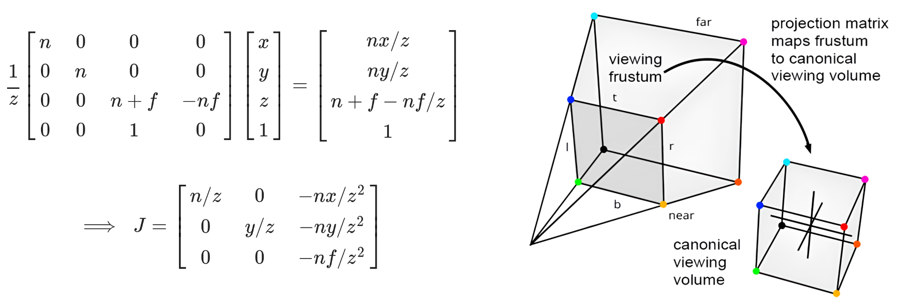
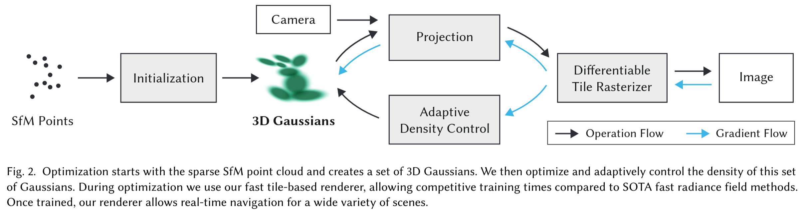

3D Gaussian Splatting¶
3DGS[1] 是基于 Splatting 和机器学习的三维重建方法。其中 Splat 是拟声词，意为“啪叽一声”：我们可以想象三维场景重建的输入是一些雪球，图片是一面砖墙，图像生成过程就是向墙面扔雪球的过程；每扔一个雪球，墙面上会留有印记，同时伴有啪叽一声，所以这个算法也被称为抛雪球法，翻译成“喷溅”也很有灵性。简单地说，splatting 的核心有三步：一是选择“雪球”，也就是说我要将它捏成一个什么形状的雪球；二是去抛掷雪球，将高斯椭球从 3D 投影到 2D，得到很多个印记；三是合成这些印记以形成最后的图像[2]。
捏雪球：用协方差控制椭球形状¶
3DGS 的输入是 SfM 得到的稀疏点云，而由于点是没有体积的，我们首先需要将点膨胀成正方体、球体或者其他基础的三维几何形状。之所以选择高斯分布作为椭球，则是因为它良好的数学性质，比如高斯分布在仿射变换后依然是高斯分布，而沿着某个轴积分将高斯分布从 3D 降到 2D 后其依然服从高斯分布。高斯分布的数学描述如下：
同时，任意椭球都可以由某个椭球经过仿射变换得到（这其实对应于从世界坐标系到相机坐标系的观测变换，所谓“横看成岭侧成峰，远近高低各不同”，在这里指的就是不同视角下看到的椭球形状是不同的），而仿射变换左乘的矩阵 \(\small W\) 可以视为旋转和缩放这两个作用的合成，即 \(\small W=RS\)：
特别地，当 \(\small x\) 服从标准正态分布时，仿射变换得到的协方差矩阵为 \(\small RSS^TR^T\)；反过来，给定协方差矩阵 \(\small\Sigma\)，我们可以通过特征值分解得到 \(\small R\) 和 \(\small S\)，即 \(\small\Sigma=Q\wedge Q^T=Q\wedge^{1/2}\wedge^{1/2} Q^T:=RSS^TR^T\)。下面的 computeCov3D 函数讲的就是这个仿射变换，传入的三维向量 scale 即为上述公式中的 \(\small x\)， cov3D 则用于存储协方差矩阵，只是传入的四元数 rot4 使得代码多了一个计算旋转矩阵的过程。
/* submodules/diff-gaussian-rasterization/cuda_rasterizer/forward.cu */
// Forward method for converting scale and rotation properties of each Gaussian to
// a 3D covariance matrix in world space. Also takes care of quaternion normalization.
__device__ void computeCov3D(const glm::vec3 scale, float mod, const glm::vec4 rot, float* cov3D)
{
// Create scaling matrix
glm::mat3 S = glm::mat3(1.0f);
S[0][0] = mod * scale.x;
S[1][1] = mod * scale.y;
S[2][2] = mod * scale.z;
// Normalize quaternion to get valid rotation
glm::vec4 q = rot;
float r = q.x;
float x = q.y;
float y = q.z;
float z = q.w;
// Compute rotation matrix from quaternion
glm::mat3 R = glm::mat3(
1.f - 2.f * (y * y + z * z), 2.f * (x * y - r * z), 2.f * (x * z + r * y),
2.f * (x * y + r * z), 1.f - 2.f * (x * x + z * z), 2.f * (y * z - r * x),
2.f * (x * z - r * y), 2.f * (y * z + r * x), 1.f - 2.f * (x * x + y * y)
);
glm::mat3 M = S * R;
// Compute 3D world covariance matrix Sigma
glm::mat3 Sigma = glm::transpose(M) * M;
// Covariance is symmetric, only store upper right
cov3D[0] = Sigma[0][0];
cov3D[1] = Sigma[0][1];
cov3D[2] = Sigma[0][2];
cov3D[3] = Sigma[1][1];
cov3D[4] = Sigma[1][2];
cov3D[5] = Sigma[2][2];
}
抛雪球：将三维椭球投影到二维¶
从世界坐标系到相机坐标系的观测变换通过上面的仿射变换描述，而相机坐标系到归一化坐标系的投影变换却并不是一个线性变换，它需要将视锥的屁股压扁并压成正方体（这样一来也将射线与坐标轴平行对齐，使得沿射线的积分计算变得更加方便），所以我们考虑引入雅可比矩阵对该非线性变换作局部线性近似，也就是用仿射变换来近似局部的投影作用。那么，在该压扁的射线坐标系下的协方差矩阵为 \(\small\Sigma_{ray}=JW\Sigma W^TJ^T\)，而均值本身便是高斯椭球的中心点，可直接对其应用投影变换。如此，再对投影后的高斯椭圆作视口变换便可得到其在像素坐标系下的表示。

正因为是局部线性近似，所以下面投影变换的 computeCov2D 函数需要先计算高斯椭球均值点在视锥中的位置；也正因为视锥压扁后的正交投影与 \(\small z\) 方向无关，所以实际上雅可比矩阵的第三行是可以置零的。
/* submodules/diff-gaussian-rasterization/cuda_rasterizer/forward.cu */
// Forward version of 2D covariance matrix computation
__device__ float3 computeCov2D(const float3& mean, float focal_x, float focal_y, float tan_fovx, float tan_fovy, const float* cov3D, const float* viewmatrix)
{
// The following models the steps outlined by equations 29 and 31 in "EWA Splatting" (Zwicker et al., 2002).
// Additionally considers aspect / scaling of viewport.
// Transposes used to account for row-/column-major conventions.
float3 t = transformPoint4x3(mean, viewmatrix);
const float limx = 1.3f * tan_fovx;
const float limy = 1.3f * tan_fovy;
const float txtz = t.x / t.z;
const float tytz = t.y / t.z;
t.x = min(limx, max(-limx, txtz)) * t.z;
t.y = min(limy, max(-limy, tytz)) * t.z;
glm::mat3 J = glm::mat3(
focal_x / t.z, 0.0f, -(focal_x * t.x) / (t.z * t.z),
0.0f, focal_y / t.z, -(focal_y * t.y) / (t.z * t.z),
0, 0, 0);
glm::mat3 W = glm::mat3(
viewmatrix[0], viewmatrix[4], viewmatrix[8],
viewmatrix[1], viewmatrix[5], viewmatrix[9],
viewmatrix[2], viewmatrix[6], viewmatrix[10]);
glm::mat3 T = W * J;
glm::mat3 Vrk = glm::mat3(
cov3D[0], cov3D[1], cov3D[2],
cov3D[1], cov3D[3], cov3D[4],
cov3D[2], cov3D[4], cov3D[5]);
glm::mat3 cov = glm::transpose(T) * glm::transpose(Vrk) * T;
return { float(cov[0][0]), float(cov[0][1]), float(cov[1][1]) };
}
雪球颜色和像素着色：球谐函数¶
通过上述过程，我们已经捏好了雪球，也想好如何把雪球往墙上砸了，但雪球不一定是白色的——3DGS 利用球谐函数 \(\small\sum_l\sum_{m=-l}^l c_l^my_l^m(\theta,\phi)\) 来表达高斯椭球的颜色。相比 RGB（对应于零阶球谐函数），高阶球谐函数给出了更为逼真的环境贴图和亮度重建效果，使得椭球呈现的颜色与观测方向相关——直觉上讲球谐函数包含了更为丰富的信息，比如三阶球谐函数所包含的信息维度达到了 \(\small (1+3+5+7)\times 3\)。下面代码传入的参数 deg 即为球谐函数的阶数，glm::vec3 result = SH_C0 * sh[0] 便是在算第零阶的元素，后续则是按公式分别计算不同阶次的球谐函数值。
/* submodules/diff-gaussian-rasterization/cuda_rasterizer/forward.cu */
// Forward method for converting the input spherical harmonics coefficients of each Gaussian to a simple RGB color.
__device__ glm::vec3 computeColorFromSH(int idx, int deg, int max_coeffs, const glm::vec3* means, glm::vec3 campos, const float* shs, bool* clamped)
{
// The implementation is loosely based on code for
// "Differentiable Point-Based Radiance Fields for
// Efficient View Synthesis" by Zhang et al. (2022)
glm::vec3 pos = means[idx];
glm::vec3 dir = pos - campos;
dir = dir / glm::length(dir);
glm::vec3* sh = ((glm::vec3*)shs) + idx * max_coeffs;
glm::vec3 result = SH_C0 * sh[0];
if (deg > 0)
{
float x = dir.x;
float y = dir.y;
float z = dir.z;
result = result - SH_C1 * y * sh[1] + SH_C1 * z * sh[2] - SH_C1 * x * sh[3];
if (deg > 1)
{
float xx = x * x, yy = y * y, zz = z * z;
float xy = x * y, yz = y * z, xz = x * z;
result = result +
SH_C2[0] * xy * sh[4] +
SH_C2[1] * yz * sh[5] +
SH_C2[2] * (2.0f * zz - xx - yy) * sh[6] +
SH_C2[3] * xz * sh[7] +
SH_C2[4] * (xx - yy) * sh[8];
if (deg > 2)
{
result = result +
SH_C3[0] * y * (3.0f * xx - yy) * sh[9] +
SH_C3[1] * xy * z * sh[10] +
SH_C3[2] * y * (4.0f * zz - xx - yy) * sh[11] +
SH_C3[3] * z * (2.0f * zz - 3.0f * xx - 3.0f * yy) * sh[12] +
SH_C3[4] * x * (4.0f * zz - xx - yy) * sh[13] +
SH_C3[5] * z * (xx - yy) * sh[14] +
SH_C3[6] * x * (xx - 3.0f * yy) * sh[15];
}
}
}
result += 0.5f;
// RGB colors are clamped to positive values. If values are
// clamped, we need to keep track of this for the backward pass.
clamped[3 * idx + 0] = (result.x < 0);
clamped[3 * idx + 1] = (result.y < 0);
clamped[3 * idx + 2] = (result.z < 0);
return glm::max(result, 0.0f);
}
\(\small\alpha-blending\) 中的像素颜色是通过沿射线的体渲染得到的，即将高斯椭球按照射线坐标系的深度排序，然后按从近到远的顺序依次抛出：\(\small C=\sum_{i=1}^N T_i\alpha_ic_i=\sum_{i=1}^N\prod_{j=1}^{i-1}(1-\alpha_i)\big(1-\exp(-\sigma_i\delta_i)\big)c_i\)，其中 \(\small T(s)\) 表示在 \(\small s\) 点之前光线没有被阻碍的概率或者说透过率，\(\small\sigma(s)\) 表示在 \(\small s\) 点处光线撞击粒子或者说被粒子阻碍的概率，\(\small c(s)\) 表示在 \(\small s\) 点处粒子发出的颜色，\(\small\delta(s)\) 则表示点 \(\small s\) 处沿射线离散积分的间距。
完整流程：机器学习与参数评估¶
每个点膨胀成的三维高斯椭球参数包括：中心点位置 \(\small (x,y,z)\)、协方差矩阵 \(\small\Sigma\)、球谐函数系数矩阵和透明度 \(\small\alpha\)，这些初始化的高斯椭球通过上述泼溅的过程得到二维图像，再将该图像和 Ground Truth 的误差反向传播来优化椭球参数，其中损失函数被定义为 \(\small\mathcal{L}=(1-\lambda)\mathcal{L}_1 + \lambda\mathcal{L}_{D-SSIM}\)，如下述代码块所示。可以注意到的是，代码 submodules 模块下有 simple-knn 部分，这是因为高斯椭球被初始化为一个各向同性的球，其半径被设为三近邻距离的平均值以避免铺不满或者椭球重叠的情况。
''' train.py '''
def training(dataset, opt, pipe, testing_iterations, saving_iterations, checkpoint_iterations, checkpoint, debug_from):
...
# Loss
gt_image = viewpoint_cam.original_image.cuda()
Ll1 = l1_loss(image, gt_image)
if FUSED_SSIM_AVAILABLE:
ssim_value = fused_ssim(image.unsqueeze(0), gt_image.unsqueeze(0))
else:
ssim_value = ssim(image, gt_image)
loss = (1.0 - opt.lambda_dssim) * Ll1 + opt.lambda_dssim * (1.0 - ssim_value)
但是如果只对 colmap 生成的初始点云作优化的话，那么后续不管如何优化高斯椭球的数量都是不变的，这使得算法强依赖于 SfM 的初始化，所以 3DGS 提出了自适应密度控制与优化，即对透明的高斯分布作周期性滤除或者说剔除存在感太低的高斯椭球，同时，对于 under-reconstruction 的区域，克隆高斯并沿着梯度方向移动以覆盖几何体；对于 over-reconstruction 的区域则拆分高斯以更好地拟合细粒度细节。可以发现，机器学习的部分非常简单且不涉及深度学习的知识，3DGS 的难度主要在于大量计算机图形学的理解和 GPU 的高性能编程。
